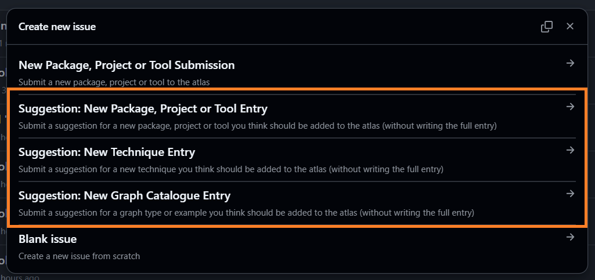
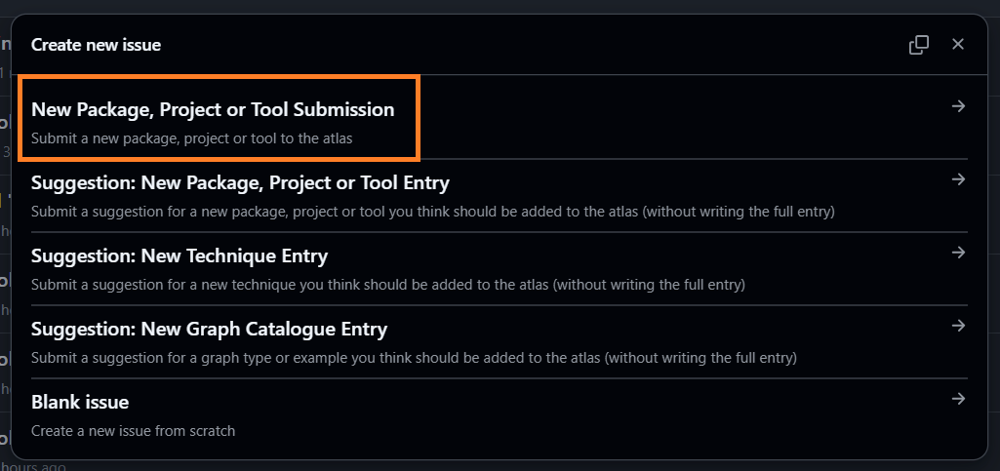
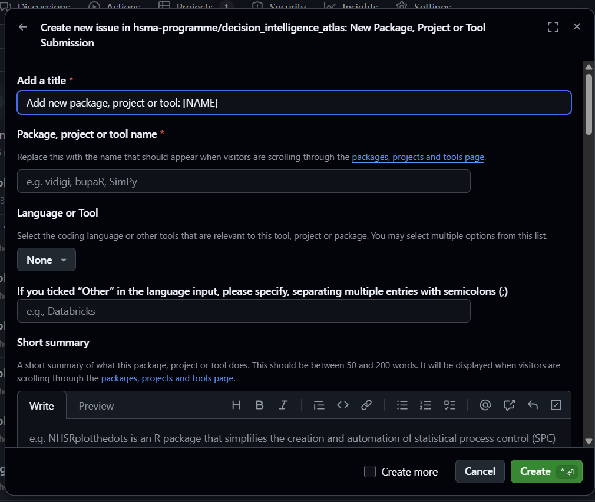

There are lots of ways to contribute to the Atlas - and many don’t involve code or a lot of your time!
We want - and need - this to be a project written for the community, by the community. So please don’t be afraid to get stuck in - we’re a friendly bunch and want to make the contribution process as easy as possible.
Submit an idea for an entry
Heard of a project, package or tool you think the Atlas should showcase?
Think there’s a graph type you think should be shared with the community? Even better, do you have a reproducible code snippet to make that graph?
Or what about an advanced analysis, data science or operational research technique you think we should include?
You don’t have to write the full thing - just submit an issue on the Atlas’s GitHub repository.

Don’t worry about accidentally submitting a duplicate - we’d rather hear about something ten times than not at all! But if you’d like to take a look, you can see all of the currently proposed entries in our GitHub project.
Click here to open the list of proposed Atlas entries in a new tab.
Write an entry
Without code
Want to write some entries for us, but not confident working with GitHub and Quarto (the framework we build the site with)? No problem! We have a totally code free route to writing Atlas entries.
Follow this link to submit an issue on the Atlas’s GitHub repository.
Choose ‘New Package, Project or Tool Submission’

You’ll then be provided with a form to gather the information we need to create a new Atlas entry - no code required.

With a bit of GitHub actions wizardry, your form will be translated into the format the website need. A member of the Atlas team will then review this file and make any necessary tweaks before incorporating it into the site.
At the moment, it’s only possible to contribute a package, project or tool in this way.
We may add the option to contribute techniques or graph catalogue entries in this way in the future - check back or let us know if this is something you’d be interested in.
With code
Like working with Quarto, or want to give it a try?
Head over to the instructions in our GitHub readme for details of how you can contribute to the Atlas via making a pull request on GitHub.
Contributor Code of Conduct
We want the Atlas to be a friendly and welcoming project for all people, regardless of your background or level of coding expertise.
Please take a look at our code of conduct below:
Our Pledge
We are committed to creating a welcoming and inclusive environment for everyone who participates in this project. We pledge to make participation in our community a harassment-free experience for all, regardless of:
- Age
- Body size
- Disability
- Ethnicity
- Gender identity and expression
- Level of experience
- Nationality
- Personal appearance
- Race
- Religion
- Sexual identity and orientation
Our Standards
Examples of behavior that contributes to a positive environment include:
- Being respectful and considerate in all interactions
- Offering constructive feedback
- Using inclusive language
- Focusing on what is best for the community
- Showing empathy toward other contributors
Examples of unacceptable behavior include:
- Harassment or discrimination of any kind
- Personal attacks, trolling, or insulting comments
- Public or private harassment
- Publishing others’ private information without consent
- Any conduct which could reasonably be considered inappropriate in a professional setting
Our Responsibilities
Project maintainers are responsible for clarifying standards of acceptable behavior and are expected to take appropriate action in response to any unacceptable behavior. They have the right and responsibility to remove, edit, or reject contributions that do not align with this Code of Conduct.
Scope
This Code of Conduct applies both within project spaces (e.g., GitHub issues, pull requests, discussions) and in public spaces when someone is representing the project or its community.
Enforcement
Instances of abusive, harassing, or otherwise unacceptable behavior may be reported to the maintainers via GitHub Issues or by direct contact. All complaints will be reviewed and investigated promptly and fairly.
Attribution
This Code of Conduct is adapted from the Contributor Covenant, version 2.1.